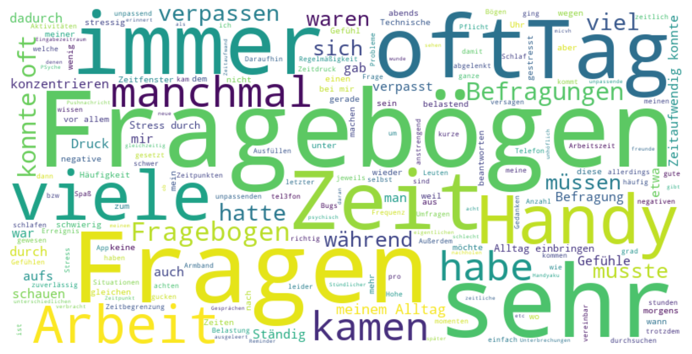

# Extracting month and day of the week
df_monitoring['start_month'] = df_monitoring['ema_start_date'].dt.month
df_monitoring['start_day_of_week'] = df_monitoring['ema_start_date'].dt.dayofweek # Monday=0, Sunday=6First Insights to Data Coverage from the PREACT study
First Data for Passive Data Collection using Smartwatches and GPS from the PREACT Study.
1 Introduction
Treatment personalization is highly discussed to counteract insufficient response rates in psychotherapy. In the quest for criteria allowing informed selection or adaptation, ambulatory assessment data (i.e. EMA, passive sensing)are a key component, as processes happening outside of therapy sessions can be depicted in high temporal and/or spatial resolution.
PREACT is a multicenter prospective-longitudinal study investigating different predictors of non-response (i.e. EEG, fMRI) in around 500 patients undergoing cognitive behavioral therapy for internalizing disorders (https://forschungsgruppe5187.de/de).
2 Methods
Patients can enroll for therapy-accompanying ambulatory assessment. They are provided with a customized study app and a state-of-the-art smartwatch collecting passive data like GPS and heart rate for up to 365 days. In parallel, three 14-day EMA phases (pre-, mid- and post-therapy) cover transdiagnostic (i.e. emotion regulation), contextual and therapy-related aspects.
Here, we present first results on data compliance and quality for the passive sensing data as well as EMA assessments. The results are based on data that was downloaded on 15.04.2024.
3 Results
3.1 Demographics
# Specify your variables
continuous_vars = ['age', 'bsi_gsi', 'ses', 'costs_ema_burden']
categorical_vars = ['gender_description', 'scid_cv_description', 'ema_smartphone_description', 'employability_description',
'prior_treatment_description', 'ema_wear_exp', 'ema_special_event_description', 'partnership']
# Create the table
demographic_table = help_functions.format_demographics(df_monitoring, continuous_vars, categorical_vars)
# Output as Markdown
# Convert to Markdown and display
markdown_output = demographic_table.to_markdown()
display(Markdown(markdown_output))| Variable | Overall | Min | Max | Missing (%) |
|---|---|---|---|---|
| age, mean (SD) | 32.45 (10.91) | 19.00 | 65.00 | 22 (10.28%) |
| bsi_gsi, mean (SD) | 1.30 (0.57) | 0.32 | 3.68 | 34 (15.89%) |
| ses, mean (SD) | 2.32 (1.03) | 1.00 | 5.00 | 22 (10.28%) |
| costs_ema_burden, mean (SD) | 2.65 (1.10) | 1.00 | 5.00 | 100 (46.73%) |
| gender_description | 22 (10.28%) | |||
| female, n (%) | 118 (61.46%) | |||
| male, n (%) | 68 (35.42%) | |||
| not specified, n (%) | 3 (1.56%) | |||
| diverse, n (%) | 2 (1.04%) | |||
| no gender, n (%) | 1 (0.52%) | |||
| scid_cv_description | 22 (10.28%) | |||
| Depressive Disorder, n (%) | 91 (47.4%) | |||
| Social Anxiety Disorder, n (%) | 33 (17.19%) | |||
| Obsessive-Compulsive Disorder, n (%) | 27 (14.06%) | |||
| Generalized Anxiety Disorder, n (%) | 15 (7.81%) | |||
| Agoraphobia and/or Panic Disorder, n (%) | 11 (5.73%) | |||
| Post-Traumatic Stress Disorder, n (%) | 11 (5.73%) | |||
| Specific Phobia, n (%) | 4 (2.08%) | |||
| ema_smartphone_description | 8 (3.74%) | |||
| iPhone, n (%) | 110 (53.4%) | |||
| Android, n (%) | 96 (46.6%) | |||
| employability_description | 22 (10.28%) | |||
| employable, n (%) | 160 (83.33%) | |||
| unemployable (on sick leave), n (%) | 22 (11.46%) | |||
| other, n (%) | 5 (2.6%) | |||
| on disability pension, n (%) | 5 (2.6%) | |||
| prior_treatment_description | 22 (10.28%) | |||
| no prior treatment, n (%) | 75 (39.06%) | |||
| outpatient psychotherapy, n (%) | 65 (33.85%) | |||
| both, n (%) | 30 (15.62%) | |||
| inpatient or partial inpatient treatment/psychotherapy, n (%) | 15 (7.81%) | |||
| yes, n (%) | 7 (3.65%) | |||
| ema_wear_exp | 28 (13.08%) | |||
| 0.0, n (%) | 109 (58.6%) | |||
| 1.0, n (%) | 77 (41.4%) | |||
| ema_special_event_description | 8 (3.74%) | |||
| usual, n (%) | 150 (72.82%) | |||
| special event, n (%) | 56 (27.18%) | |||
| partnership | 22 (10.28%) | |||
| 1.0, n (%) | 102 (53.12%) | |||
| 0.0, n (%) | 90 (46.88%) |
# Pie chart for 'scid_cv_description'
scid_counts = df_monitoring['scid_cv_description'].value_counts().reset_index()
scid_counts.columns = ['SCID_CV_Category', 'Counts'] # Renaming columns for clarity in Plotly
fig = px.pie(scid_counts, values='Counts', names='SCID_CV_Category',
title='Distribution of SCID Primary Categories',
color_discrete_sequence=px.colors.qualitative.Set3,
labels={'SCID_CV_Category': 'SCID Category'}) # Labels for hover data
fig.update_layout(showlegend=False)
fig.update_traces(textposition='outside', textinfo='percent+label')
fig.show()3.2 Study status
3.3 GPS
# Assuming df_gps_coverage is your DataFrame
fig = px.violin(df_gps_coverage,
y="data_coverage_per",
x="ema_smartphone_description",
box=True, # Shows a box plot inside the violin
title="GPS Coverage per Smartphone")
fig.show()# Assuming df_gps_coverage is your DataFrame
fig = px.violin(df_gps_coverage,
y="data_coverage_per",
x="scid_cv_description",
points='all',
box=True, # Shows a box plot inside the violin
title="GPS Coverage per Scid Diagnosis")
fig.show()3.4 Passive data
df_pd_merged = df_passive.merge(df_monitoring, on = "customer", how="inner")
df_pd_coverage = df_pd_merged.drop_duplicates(subset=["customer"])# Assuming df_gps_coverage is your DataFrame
fig = px.violin(df_pd_coverage,
y="data_coverage_per",
x="ema_smartphone_description",
box=True, # Shows a box plot inside the violin
title="Passive Data Coverage per Smartphone")
fig.show()# Assuming df_gps_coverage is your DataFrame
fig = px.violin(df_pd_coverage,
y="data_coverage_per",
x="scid_cv_description",
box=True, # Shows a box plot inside the violin
points='all',
title="Passive Data Coverage SCID Diagnosis")
#fig.show()3.5 EMA data
# Assuming df_active is your DataFrame and 'nquest_EMA1', 'nquest_EMA2' are your columns
df_active["nquest_EMA1_relative"] = ((df_active["nquest_EMA1"] / 114) * 100).round(0)
df_active["nquest_EMA2_relative"] = ((df_active["nquest_EMA2"] / 114) * 100).round(0)#Include only people that have finished the first assessment phase
df_active_coverage = df_active.loc[~df_active.status.isin(['Erhebung_1_aktiv', 'Dropout', 'Pin_missing'])]
df_active_coverage = df_active_coverage.drop_duplicates(subset=["customer"])# Calculate the mean and standard deviation for 'nquest_EMA2_relative'
mean_ema2 = df_active_coverage['nquest_EMA2_relative'].mean()
std_dev_ema2 = df_active_coverage['nquest_EMA2_relative'].std()
count_ema2 = df_active_coverage['nquest_EMA2_relative'].count()
# Calculate the mean and standard deviation for 'nquest_EMA1_relative'
mean_ema1 = df_active_coverage['nquest_EMA1_relative'].mean()
std_dev_ema1 = df_active_coverage['nquest_EMA1_relative'].std()
count_ema1 = df_active_coverage['nquest_EMA1_relative'].count()
# Print the results
print(f"Mean for nquest_EMA2_relative: {mean_ema2:.2f} (based on {count_ema2} entries)")
print(f"Standard Deviation for nquest_EMA2_relative: {std_dev_ema2:.2f} (based on {count_ema2} entries)")
print(f"Mean for nquest_EMA1_relative: {mean_ema1:.2f} (based on {count_ema1} entries)")
print(f"Standard Deviation for nquest_EMA1_relative: {std_dev_ema1:.2f} (based on {count_ema1} entries)")Mean for nquest_EMA2_relative: 51.78 (based on 27 entries)
Standard Deviation for nquest_EMA2_relative: 35.81 (based on 27 entries)
Mean for nquest_EMA1_relative: 59.56 (based on 175 entries)
Standard Deviation for nquest_EMA1_relative: 26.23 (based on 175 entries)ANOVA test results F-statistic: 0.6604354153644334, P-value: 0.51844856160018483.6 Data coverage across time
# Assuming df_ema_active is your main dataframe and it's already loaded
study_version_mapping = {
'Lang': 'Lang',
'Lang (Wechsel)': 'Lang',
'Kurz': 'Kurz',
'Kurz (Wechsel/Abbruch)': 'Kurz'
}
df_ema_active['Grouped_Study_Status'] = df_ema_active['study_version'].map(study_version_mapping)
# Calculate the mean of daily_entries_sum for each day and group
mean_daily_entries = df_ema_active.groupby(['quest_complete_relative1', 'Grouped_Study_Status'])['daily_entries_sum'].mean().reset_index()
# Filter the dataframe to include only the relevant x-axis range
mean_daily_entries = mean_daily_entries[(mean_daily_entries['quest_complete_relative1'] >= 0) & (mean_daily_entries['quest_complete_relative1'] <= 15)]
# Create the line plot with separate lines for 'Kurz' and 'Lang'
fig = px.line(mean_daily_entries,
x='quest_complete_relative1',
y='daily_entries_sum',
color='Grouped_Study_Status', # This separates the lines by group
title='Mean Number of Completed Daily Surveys Per Day by Study Condition',
labels={'quest_complete_relative1': 'Day', 'daily_entries_sum': 'Average Daily Entries', 'Grouped_Study_Status': 'Study Condition'})
# Update x-axis to make sure it ranges from 0 to 15
fig.update_layout(
xaxis=dict(
range=[0, 15],
title='Day'
),
yaxis=dict(
title='Average Daily Entries'
)
)
# Display the plot
fig.show()3.7 Subjective Experience (N=68)
from wordcloud import WordCloud
import matplotlib.pyplot as plt
import pandas as pd
# Assuming df_active_coverage is your DataFrame and 'costs_ema_text' is the text column
# Example stop words list
stop_words = set(['die', 'ich', 'und', 'der', 'das', 'ist', 'zu', 'ein', 'in', 'nicht', 'war', 'es', 'mich', 'hat'
, 'auf', 'wenn', 'fr', 'den', 'mit', 'oder', 'da'])
# Function to remove stop words and handle non-string or NaN entries
def remove_stop_words(text, stop_words):
if pd.isna(text):
return "" # Return an empty string for NaN values
words = str(text).split() # Convert to string to handle non-string types
filtered_words = [word for word in words if word.lower() not in stop_words]
return ' '.join(filtered_words)
# Apply the function to each text entry
df_active_coverage['filtered_text'] = df_active_coverage['costs_ema_text'].apply(lambda x: remove_stop_words(x, stop_words))
# Combine all text entries into one large string
text = ' '.join(df_active_coverage['filtered_text'])
# Generate the word cloud
wordcloud = WordCloud(width=800, height=400, background_color='white').generate(text)
# Display the word cloud using matplotlib
plt.figure(figsize=(10, 5))
plt.imshow(wordcloud, interpolation='bilinear')
plt.axis('off') # Hide the axes
plt.show()